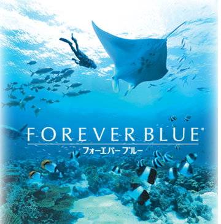
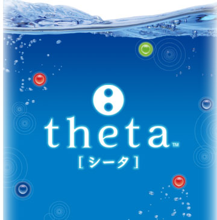
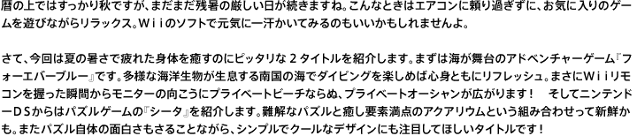

さて、今回は夏の暑さで疲れた身体を癒すのにピッタリな２つのタイトルを紹介します。まずは南国の海を舞台に海中散策を楽しめる『フォーエバーブルー』です。多様な海洋生物が生息する広大な海を自分のペースでゆったりと楽しむことができます。今回は開発に携わった皆さんに『FOREVER BLUE』の魅力を語ってもらいました。そしてもう１つは、ニンテンドーＤＳソフトとして発売される『シータ』をご紹介。癒し要素満点のアクアリウムと手ごわいパズルという新鮮な組み合わせを楽しむことができます。国際色豊かな開発スタッフから興味深い話が飛び出しました。" WIDTH="720" HEIGHT="154">
『FOREVER BLUE』：© 2007 Nintendo / ARIKA
『theta』：© 2007 Nintendo / VITEI